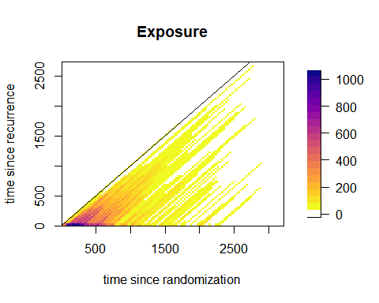

Introduction
This vignette focuses on the analysis of time-to-event data with two
time scales. We show how to use the functions of the package
TwoTimeScales with their different options. In particular
we show:
- how to bin data over the - or the -plane
- how to bin data when covariates are presents
- how to perform a grid search of the optimal couple of smoothing parameters
- how to plot the AIC or BIC grid
- how to perform a numerical optimization of the model
- how to use the functionalities of the LMMsolver package to find the optimal smoothing parameters
- how to estimate a model with covariates
This vignette does not deal with visualization of the estimated smooth hazard with two time scales. Visualization is the topic of the vignette Visualize hazards with two time scales. We assume that the reader of this vignette has some familiarity with the model, and with the basic functions of the package introduced in Introduction to TwoTimeScales. For a full exposition of the model, we refer to Carollo et al. (2024).
In the following, we once again analyse the dataset
reccolon2ts, which includes data on patients with
recurrence of colon cancer. The first part of this vignette deals with
the model without covariates, and the proportional hazards model for the
same analysis follows in the second part.
Hazard of death by time since randomization and time since recurrence
The two time variables are = time since randomization and = time since recurrence. Additionally, = time at recurrence, is the fixed time at entry in the risk set recorded as number of days from randomization to recurrence. The analysis is performed over the -plane, so we need to bin the data over and . We consider bins of width 30 days on both axes, and we obtain 77 bins on the axis and bins on the axis.
dt2ts <- prepare_data(data = reccolon2ts,
u = "timer",
s_out = "timesr",
events = "status",
ds = 30, du = 30)> print(dt2ts)
An object of class 'data2ts'
Data:
List of 2
$ bins :List of 6
$ bindata:List of 2
- attr(*, "class")= chr "data2ts"
NULL
Range covered by the bins:
$bins_u
[1] 8 2288
$bins_s
[1] 0 2730
Number of bins:
$nu
[1] 76
$ns
[1] 91
Overview of the binned data:
Total exposure time: 246018
Total number of events: 409Here, we do not use the artificially created left truncated entry times on the -axis, therefore the function returns a message informing the user that an entry time of 0 is imputed to all observations.
After having prepared the data we can estimate the model. In the analysis presented in Carollo et al. (2024), we build 23 -splines over each of the two dimensions, for a total of 529 parameters. The optimal smoothing parameters are chosen by numerical optimization of the AIC of the model as function of the smoothing parameters. We use cubic -splines bases and a second order penalty. Here we explicitly specify all these parameters, even though some of them are the default options.
mod1 <- fit2ts(data2ts = dt2ts,
Bbases_spec = list(bdeg = 3,
nseg_s = 20,
min_s = 0,
max_s = 2730,
nseg_u = 20,
min_u = 0,
max_u = 2300),
lrho = c(2, 0),
pord = 2,
optim_method = "ucminf",
optim_criterion = "aic") The object returned by fit2ts() is of class
'haz2ts'. The optimal smoothing parameters are
and
,
and the effective dimension of the model is 11.1.
> summary(mod1)
Number of events = 409
Model specifications:
nu = 76
ns = 91
cu = 23
cs = 23
Optimal smoothing:
log10(rho_u) = 2.402191
log10(rho_s) = 0.3104794
rho_u = 252.4593
rho_s = 2.043993
Model with no covariates
Model diagnostics:
AIC = 1249.297
BIC = 1314.651
ED = 11.13843We can change the optimization criterion to BIC, and compare the results in terms of smoothing parameters and effective dimensions:
mod2 <- fit2ts(data2ts = dt2ts,
Bbases_spec = list(bdeg = 3,
nseg_s = 20,
min_s = 0,
max_s = 2730,
nseg_u = 20,
min_u = 0,
max_u = 2300),
lrho = c(2, 0),
pord = 2,
optim_method = "ucminf",
optim_criterion = "bic")> mod2$optimal_logrho
[1] 6.137452 1.550218
> mod2$optimal_model$ed
[1] 5.451275As expected, choosing BIC as optimization criterion results in larger smoothing parameters and a smaller effective dimension, as BIC penalizes model complexity more strongly than AIC. The following code-chunk shows how to use the grid-search method to select the optimal pair of smoothing parameters and, at the same time, to produce plots of the AIC and BIC values of the grid of values of both smoothing parameters.
mod3 <- fit2ts(data2ts = dt2ts,
Bbases_spec = list(bdeg = 3,
nseg_s = 20,
min_s = 0,
max_s = 2730,
nseg_u = 20,
min_u = 0,
max_u = 2300),
optim_method = "grid_search",
optim_criterion = "aic",
lrho = list(seq(-1, 3, by = .2),
seq(-1, 3, by = .2)),
par_gridsearch = list(
plot_aic = TRUE,
plot_bic = TRUE,
mark_optimal = TRUE,
plot_contour = TRUE
))
Alternatively, we can ask the function to return the matrices of AIC and/or BIC values as part of the fitted object and then plot them separately (here not shown).
Lastly, we show how to fit the same model by using the package
LMMsolver Martin P. Boer (2023), that uses
the connection between linear mixed models and P-splines, and uses
sparse representation to speed-up calculations. It is possible to fit
this model by using the same function fit2ts() and
specifying the option optim_method = "LMMsolver". This
returns an object of class haz2tsLMM, which differ in
structure from objects of class haz2ts, but has the same
methods implemented.
mod_LMM <- fit2ts(data2ts = dt2ts,
Bbases_spec = list(bdeg = 3,
nseg_s = 20,
min_s = 0,
max_s = 2730,
nseg_u = 20,
min_u = 0,
max_u = 2300),
pord = 2,
optim_method = "LMMsolver",
optim_criterion = "aic")> summary(mod_LMM)
Number of events = 409
Model specifications:
nu = 76
ns = 91
cu = 23
cs = 23
Optimal smoothing:
log10(rho_u) = 2.14465
log10(rho_s) = 0.5217892
rho_u = 139.5243
rho_s = 3.324981
Model with no covariates
Model diagnostics:
AIC = 1249.449
BIC = 1314.151
ED = 11.02726Note: the functions from LMMsolver needed to fit the two time scales
hazard model are incorporated in the TwoTimeScales package.
Nevertheless, we do recommend interested readers to check out the
excellent R-package LMMsolver and its accompanying webpage:
https://biometris.github.io/LMMsolver/
PH regression for the colon cancer data
We first show how to prepare the data for the analysis with
covariates, then we see that there is no need to modify the estimation
command, as the function fit2ts() automatically recognizes
that the data object includes a covariates’ matrix and then it correctly
estimates a GLAM PH model.
dt2ts_cov <- prepare_data(data = reccolon2ts,
u = "timer",
s_out = "timesr",
events = "status",
ds = 30,
individual = TRUE,
covs = c("rx", "sex", "adhere", "obstruct", "node4"))> print(dt2ts_cov)
An object of class 'data2ts'
Data:
List of 2
$ bins :List of 6
$ bindata:List of 3
- attr(*, "class")= chr "data2ts"
NULL
Range covered by the bins:
$bins_u
[1] 8 2288
$bins_s
[1] 0 2730
Number of bins:
$nu
[1] 76
$ns
[1] 91
Overview of the binned data:
Total exposure time: 246018
Total number of events: 409
Covariates:
[1] "rx_Lev" "rx_Lev+5FU" "sex_male" "adhere"
[5] "obstruct" "node4" Then, we pass the object d2ts_cov to
fit2ts() with the same arguments as before.
mod_cov <- fit2ts(data2ts = dt2ts_cov,
Bbases_spec = list(bdeg = 3,
nseg_s = 20,
min_s = 0,
max_s = 2730,
nseg_u = 20,
min_u = 0,
max_u = 2300),
pord = 2,
optim_method = "ucminf",
optim_criterion = "aic")> summary(mod_cov)
Number of events = 409
Model specifications:
nu = 76
ns = 91
cu = 23
cs = 23
Optimal smoothing:
log10(rho_u) = 3.086114
log10(rho_s) = 0.2253687
rho_u = 1219.309
rho_s = 1.68023
beta se(beta) exp(beta) lower .95 upper.95
rx_Lev 0.06621986 0.1151591 1.068462 0.8272971 1.309626
rx_Lev+5FU 0.38410555 0.1300922 1.468300 1.0939121 1.842689
sex_male 0.25326405 0.1012150 1.288223 1.0326638 1.543783
adhere 0.15249198 0.1306318 1.164733 0.8665169 1.462949
obstruct 0.16664046 0.1218382 1.181329 0.8992247 1.463434
node4 0.39348460 0.1047729 1.482136 1.1777726 1.786500
Model diagnostics:
AIC = 3073.101
BIC = 3185.81
ED = 16.01658Prepare the data over the Lexis diagram
It is, in principle, possible to prepare the data over the
-plane.
To do so, we pass as arguments to the function
prepare_data() a vector of entry times and a vector of exit
times over the
axis, rather than the vector of entry times
.
From the image plot of the exposure times, we can see how the data are
only present in the lower half-plane where
.
dt2tsLex <- prepare_data(data = reccolon2ts,
t_in = "timer",
t_out = "timedc",
s_out = "timesr",
events = "status",
ds = 30, dt = 30)
fields::image.plot(dt2tsLex$bins$midt,
dt2tsLex$bins$mids,
dt2tsLex$bindata$R,
main = "Exposure",
xlab = "time since randomization",
ylab = "time since recurrence",
col = c("white", rev(viridis::plasma(20))))
abline(a=0,b=1)
box()
Note: estimation over the -plane with the same model is theoretically possible, but special care is needed to deal with the larger areas without data support (especially those where ). Comparison with the estimation over the -plane is currently under investigation. A future version of the package will include options for estimation over the -plane.